for
Background.
The Bézier
Curve is the original computer generated "French Curve"
and it's discovery is attributed to the French engineer, Pierre
Bézier. Let us first review ideas
concerning the cubic polynomial of degree 3 passes through the
4 points 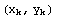
for 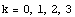 and
is shown in Figure 1.
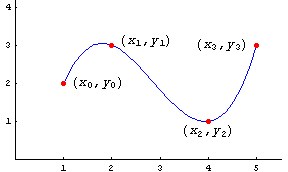
Figure 1.
Example 1. Find the
cubic polynomial or that passes through the
four points
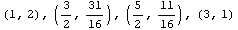 and
satisfies
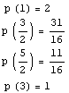
Solution
1.
Background for Hermite Interpolating
Polynomial.
The cubic Hermite
polynomial p(x) has the interpolative
properties 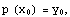 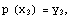 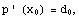 and 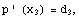 both
the function values and their derivatives are known at the
endpoints of the
interval 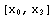. The
Hermite polynomial is referred to as a "clamped cubic," where
"clamped" refers to the slope at the endpoints being
fixed. This situation is illustrated in Figure
2.
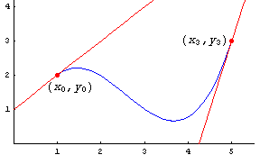
Figure 2.
Example 2. Find the
cubic Hermite polynomial or "clamped cubic" that
satisfies
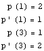
Solution
2.
The Bézier Curve
The Bézier curve was originally used
by Pierre
Bézier for CAD/CAM operations at Renault
motor car company. Bézier curves are the basis of
the entire Adobe PostScript drawing model which is used in the
software products: Adobe Illustrator, Macromedia Freehand and
Fontographer.
Construction of the Bézier
Curve
A cubic Bézier curve is defined by
four points. Two of the points are endpoints to the curve,  is the starting point and 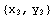is
the destination point. The points 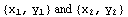
are control points or "handles." A parametric formula for
the curve is
is the starting point and 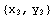is
the destination point. The points 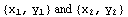
are control points or "handles." A parametric formula for
the curve is
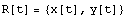
where 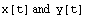
are cubic equations defined in the interval 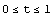 as
shown in Figure 3.
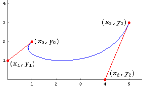
Figure 3.
Theorem (Bézier
Curve). The parametric
equations for
for the Bézier curve  are given by
are given by
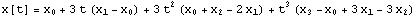,
and
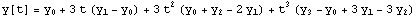 for .
Proof The Bézier Curve The Bézier Curve
Example 3. Find the
Bézier curve which has the starting at the point  and destination point 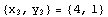
which has the control points 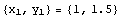
and 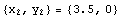,
respectively. Use the parametric equations to form
the Bézier curve.
and destination point 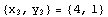
which has the control points 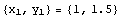
and 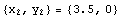,
respectively. Use the parametric equations to form
the Bézier curve.
Solution
3.
More background
If a control point is chosen farther away
from a endpoint, (but in the same direction), then the Bézier
curve will more closely approximate the tangent line near that
endpoint.
Example 4. Find the
Bézier curve which starts at 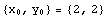
and ends at  which has the control points
which has the control points  and
and  ,
respectively.
,
respectively.
Solution
4.
Example 5. Compare
the Bézier curve which starts at
and ends at  given in examples 3 and 4.
given in examples 3 and 4.
Solution
5.
Bernstein polynomials.
Definition (Bernstein
Polynomials). The Bernstein
polynomials of degree 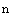
are
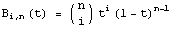,
for 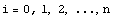, where
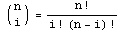.
Exploration.
Construction of the Bézier Curve
using Bernstein polynomials.
The coordinate
functions 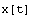
and 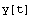
for the Bézier curve we are using can written as a
linear combinations of the Bernstein polynomials
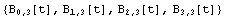:
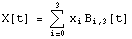,
and
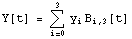.
Verify that the two functions  and
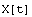
are the same.
and
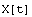
are the same.
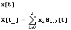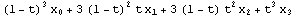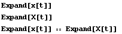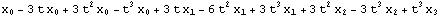 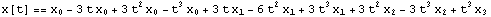
Similarly, the two functions and 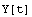
are the same.
To verify we have the correct end conditions, we can
evaluate and
its derivative at 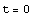
and 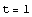, and
see if it has the required properties.
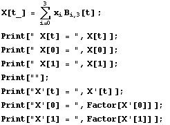
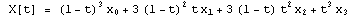
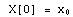
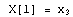
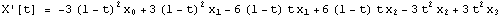
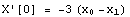
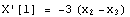
Recall that this is what we wanted in the first construction.
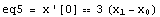
Justification for the factor
3.
Since we want the two constructions of the
Bézier curve to be the same, it is common practice to use the
term
in the development of the parametric equations. Similarly
the term
is justified.
The construction of a Bézier curve using Bernstein polynomials is more appealing mathematically because the coefficients in the linear combination are just the coordinates of the given four points.
Example 6. Find the
Bézier curve which starts at  and ends at
which has the control points
and ,
respectively.
and ends at
which has the control points
and ,
respectively.
Use Bernstein polynomials.
Solution
6.
Computer Programs The Bézier Curve The Bézier Curve
Mathematica Subroutine
(Bézier
Curve). Construct the Bézier given
endpoints
and  and
control points .
and
control points .
For illustration purposes the variables pts, ctr and
lin are used to help form dots and control lines for the graph
we will draw.
This is for pedagogical purposes, and usually they would not be
necessary.
Example 7. Find
composite Bézier curve for the data given below.
Example 8. Let use
Mathematica's Bézier curve fit procedure.
The following example is found in
the "Help" menu
under Add-ons; Standard
Packages; NumericalMath; SplineFit.
Find the "spline fit" through (0,0), (1,2), (-1,3), (0,1),
(3,0).
Example 9. What is the nature of the "spline fit" constructed by Mathematica ?
Research Experience for Undergraduates
The Bézier Curve The Bézier Curve Internet hyperlinks to web sites and a bibliography of articles.
Download this Mathematica Notebook The Bézier Curve
Return to Numerical Methods - Numerical Analysis
(c) John H. Mathews 2004